Before the Season Began
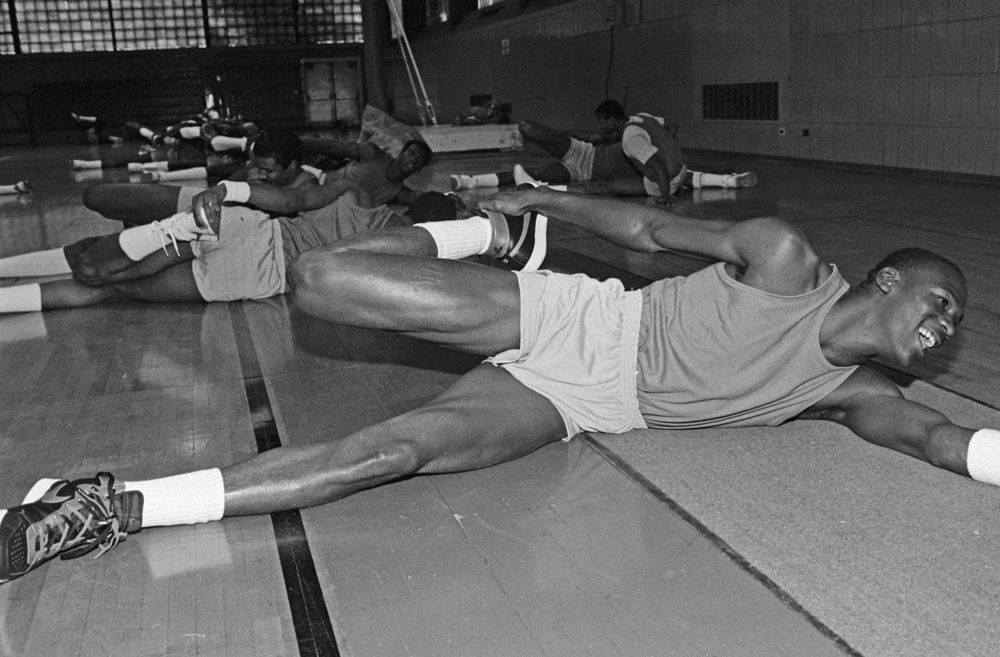
The earliest documented point in this sequence appears before the preseason schedule itself. During Bulls practice on September 28, 1984, Jordan is seen wearing a black and red Nike Air Ship that would continue into his first professional exhibition games with Chicago.
The pair does not fully correspond to standard retail configurations of the model. It presents a lower-cut profile than typically observed, along with a mixed black and red lacing setup that appears consistently across multiple images. Most notably, the back collar features early “Air Jordan” text branding, a detail not associated with standard Air Ship production.
Construction details further distinguish the pair. The outsole differs from standard Air Ship tooling, instead aligning with a cupsole derived from Nike’s Pro Circuit tennis line. These characteristics place the shoe within a transitional design period at Nike, where existing performance platforms were adapted prior to the formal introduction of the Air Jordan line.
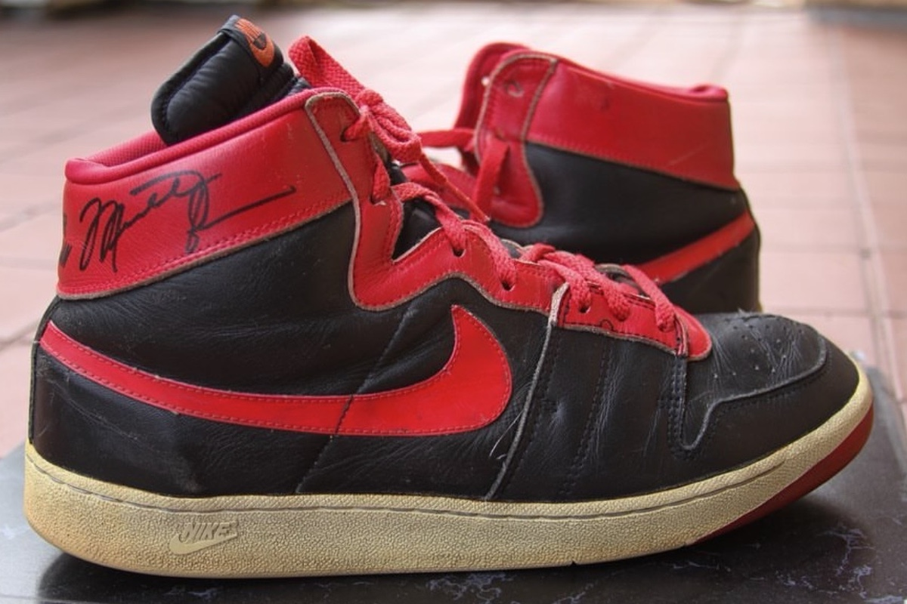
Across early practice and preseason imagery, the black and red Air Ship presents as a single identifiable pair.
These alignments allow the object to be placed within a defined sequence of use, linking early practice imagery with subsequent preseason game footage and later artifact documentation.
The surviving example shown here is associated with sports agent Aaron Goodwin of Goodwin Sports, who has stated that the pair was given to him and has described it as one of the earliest pairs provided to Jordan during this period.
While such claims cannot be independently verified through game imagery alone, the physical characteristics of the pair and its alignment with documented preseason use place it within the same early sequence of wear.
The First Alternate Configuration
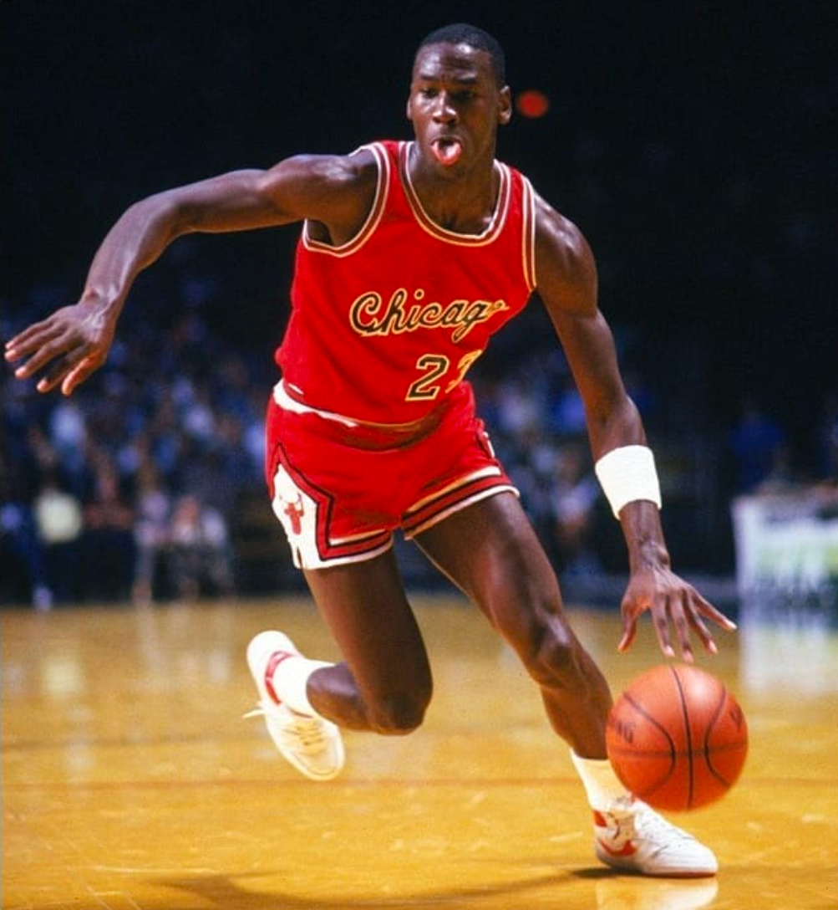
On October 13, against Milwaukee, a second configuration appears. Unlike the black and red pair, this white and red Air Ship carried “AIR” branding on the heel and was worn with white laces.
The appearance of this sample interrupts the idea of a single preseason shoe. By mid-October, Jordan had already worn at least two visually distinct Air Ship configurations before the regular season had begun.
The white and red sample would become important again several days later, after the black and red pair returned to the rotation.
October 18
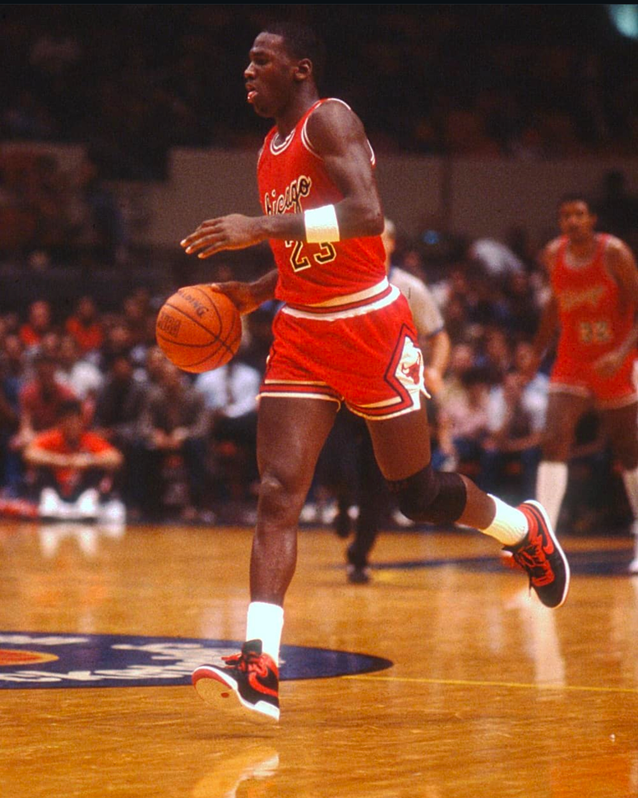
The black and red pair returned later in the preseason and is tied most significantly to the October 18 game against the New York Knicks.
This game provides the clearest fixed point within the preseason sequence. The shoe visible on foot aligns with the surviving black and red Air Ship through lace configuration, construction details, and wear characteristics.
The October 18 imagery also provides the clearest view of the mixed black and red lacing configuration. The two-tone lace presentation appears consistently across multiple frames, suggesting an intentional setup rather than irregularity.
Close comparison between the Knicks game imagery and the surviving pair supports the identification of a single black and red Air Ship within the preseason rotation.
These alignments connect practice imagery, preseason game use, and later artifact documentation into one continuous sequence.
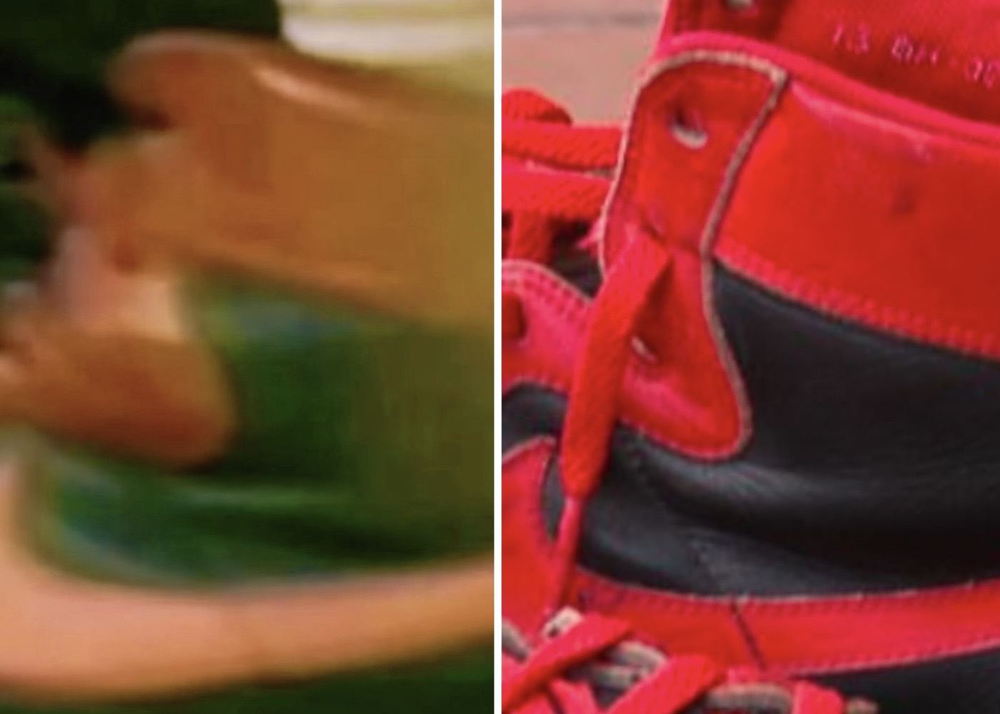
A February 25, 1985 letter from the NBA to Nike later confirmed that the league’s rules and procedures prohibited the wearing of certain red and black Nike basketball shoes by Jordan “on or around October 18, 1984.”
This places the black and red Air Ship at the center of the earliest documented enforcement moment in Jordan’s professional footwear history. At the time of that game, the Air Jordan 1 had not yet appeared in NBA competition.
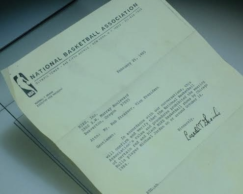
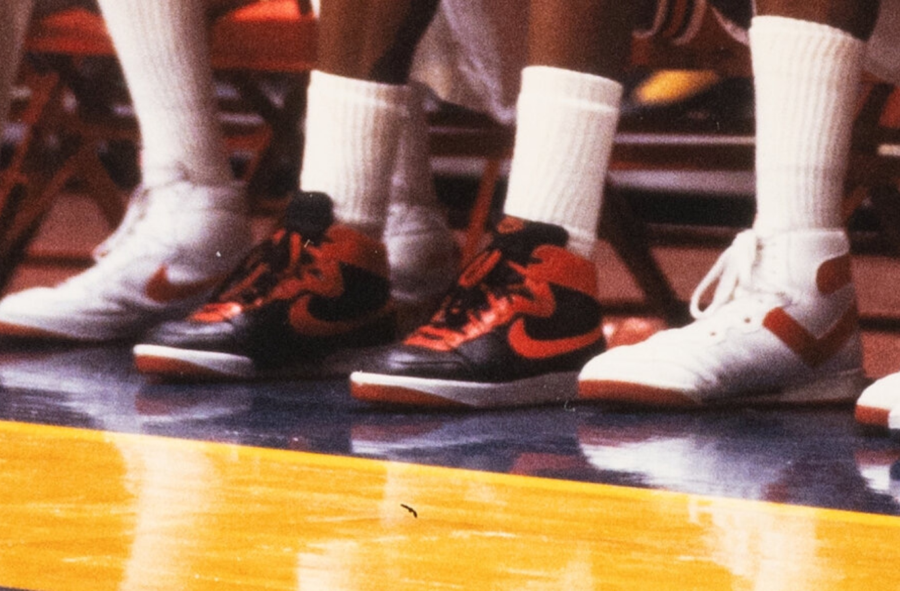
The story began before
the Air Jordan 1.
The Following Night
The next night, on October 19, Jordan returned to a white and red Air Ship against the Sacramento Kings.
The shoe again displayed “AIR” branding on the collar and a "Nike" tongue tag, but now appeared with red laces rather than the white laces seen on October 13.
The red laces were not part of the standard white and red Air Ship configuration. They also appear unusually short for the higher-cut shoe, with a tight knot positioned near the top of the lacing structure.
The timing is significant. The red-laced white pair appears immediately after the black and red pair was prohibited by the NBA, before returning to white laces for the first game of the season.
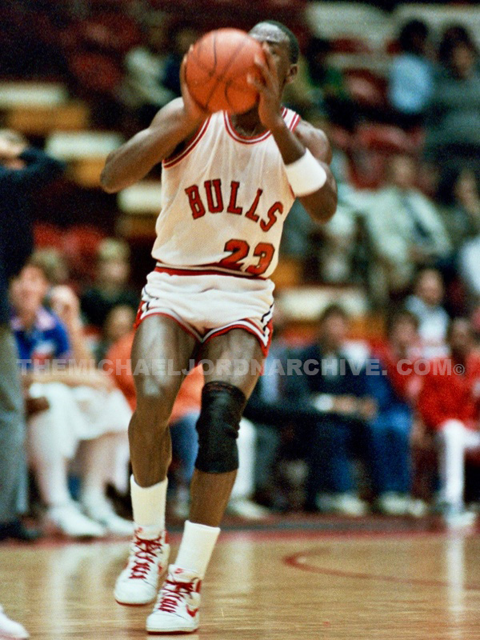
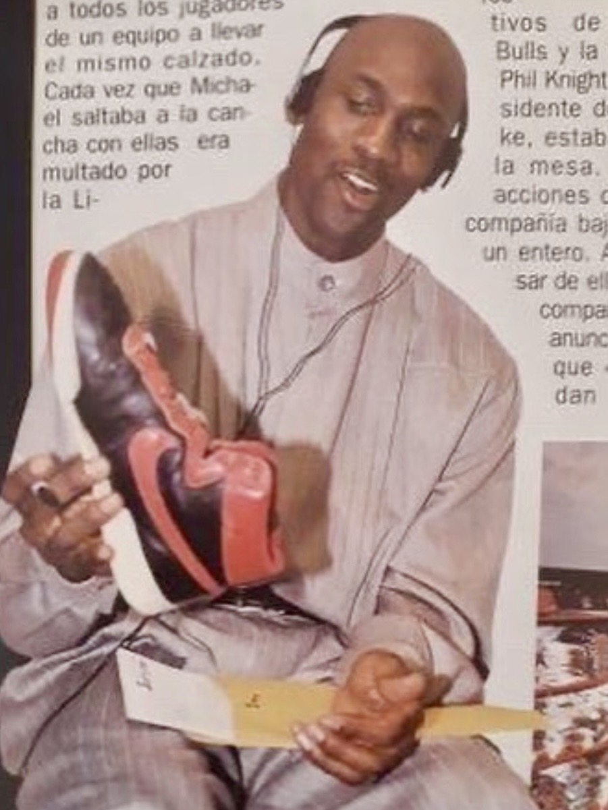
The significance of the red laces becomes clearer when viewed alongside later documentation of the black and red pair itself. In a 1993 image, Jordan is seen holding the same black and red Air Ship without laces, indicating that the pair was preserved in an altered state after its period of use.
When considered in sequence, the absence of laces on the surviving example and the temporary appearance of red laces on the white and red configuration the following night suggest that the adjustment may have occurred within the rotation itself.
Rather than suggesting a broad rotation, the preseason sequence points to a small number of distinct configurations, each used with continuity across specific moments. The black and red Air Ship remains traceable from early practice through the October 18 game, while the white and red “AIR” sample follows a similarly defined path.
Taken together, these early appearances reflect a narrow and evolving set of footwear, not a wide pool of interchangeable pairs, marking a transitional moment just prior to the introduction of the Air Jordan line.
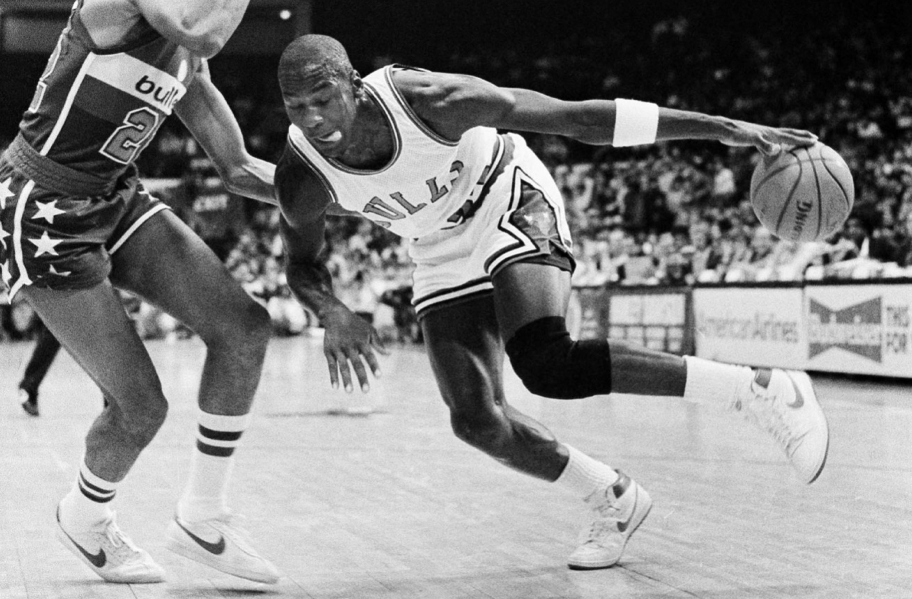
The beginning of NBA play.
The First Regular Season Pair
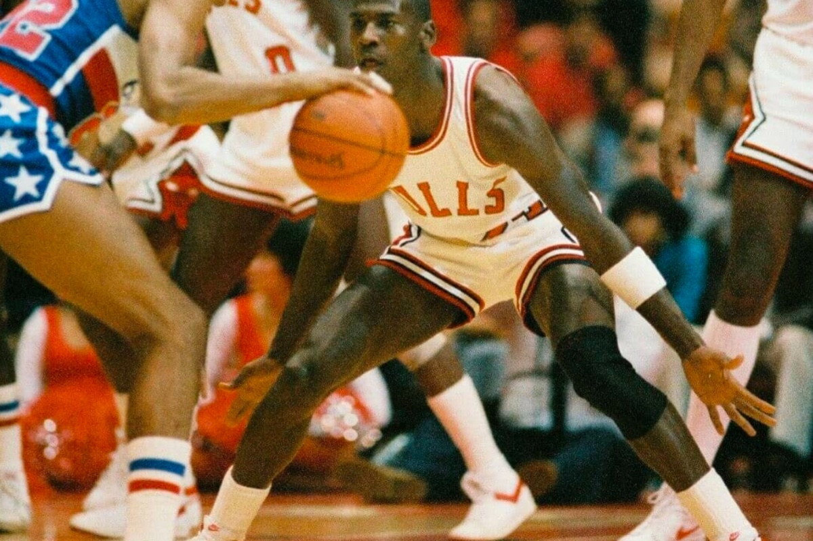
The timeline presented here is structured around the small number of white and red Nike Air Ship pairs that have surfaced publicly through auction and private sale. Each example carries either documented provenance tied to a specific date or can be extended across additional appearances through photographic comparison.
These pairs were worn across multiple games, allowing individual examples to anchor broader segments of the sequence. Together, they account for a substantial portion of Jordan’s Air Ship period, representing an estimated 60–70% of documented use across roughly a month and a half.
While additional pairs may have existed between these points, available documentation remains limited. The sequence that follows reflects only those configurations that can be directly observed, matched, and placed within this framework.
The first regular season pair aligns directly with the white and red sample first observed at the end of the preseason. It retains the same “AIR” branding on the collar, along with consistent panel shape, construction details, lacing behavior visible across multiple appearances.
Through photographic comparison, this same white and red Air Ship configuration can be traced from the final preseason appearance into the start of the NBA season. Within the Archive’s research framework, this sequence serves as an early indicator of continuity across appearances.
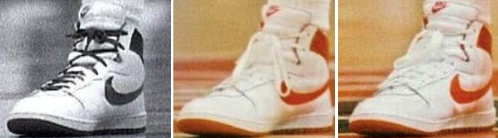
The sequence shown here represents only a portion of the underlying research. Additional comparisons across archival imagery further support this continuity, including repeated alignment in panel structure, creasing, collar shape, and lacing behavior and unique markings observed across multiple appearances.
The pair is further anchored by its provenance. It is associated with T.J. Lewis, a former Denver Nuggets ball boy, to whom the shoes were given following the November 1, 1984 game against Denver. The pair remains personally signed to him, providing a direct link between on-court use and later preservation.
This continuity is significant. Unlike later examples, which introduce variations in branding and construction, this configuration remains consistent with the late preseason sample, marking a direct carryover into the earliest phase of NBA competition.
Additional Public Anchors
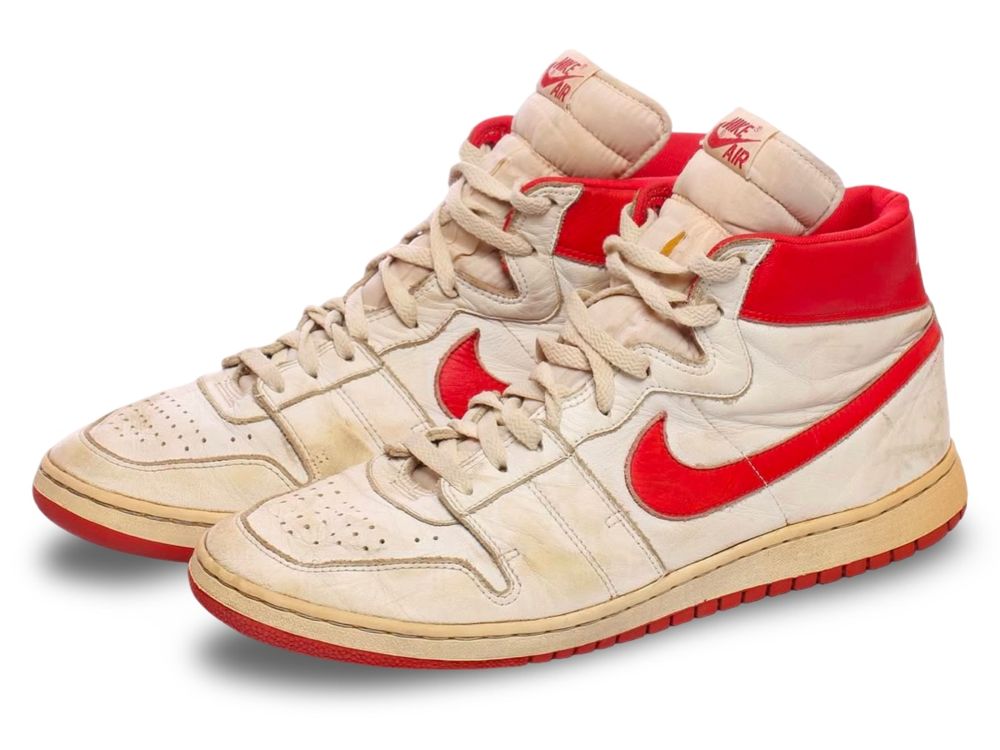
A second publicly surfaced white and red Air Ship aligns with multiple appearances across the late November and December portion of the Air Ship timeline and is visible within photographic records from this period. Research on this example remains ongoing within the Archive; at present, the pair functions as an additional anchor within the later phase of use, with further documentation required to fully define its sequence.
A third publicly surfaced example, first sold in 2015 by SCP Auctions and later resold through Sotheby’s, carries direct provenance to a Los Angeles Lakers ball boy and was reportedly given to him following the December 2 game. Public photo-matching by MeiGray has connected the pair to a documented game shortly before that date.
Additional archival comparison extends the placement of this same example across several more appearances within the late November and early December window, reinforcing its role as a central anchor within this period of use.
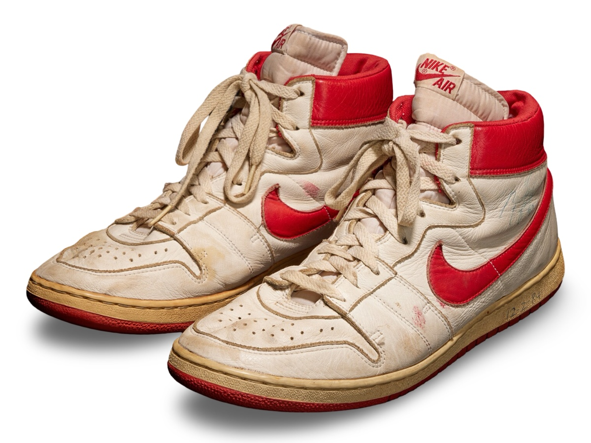
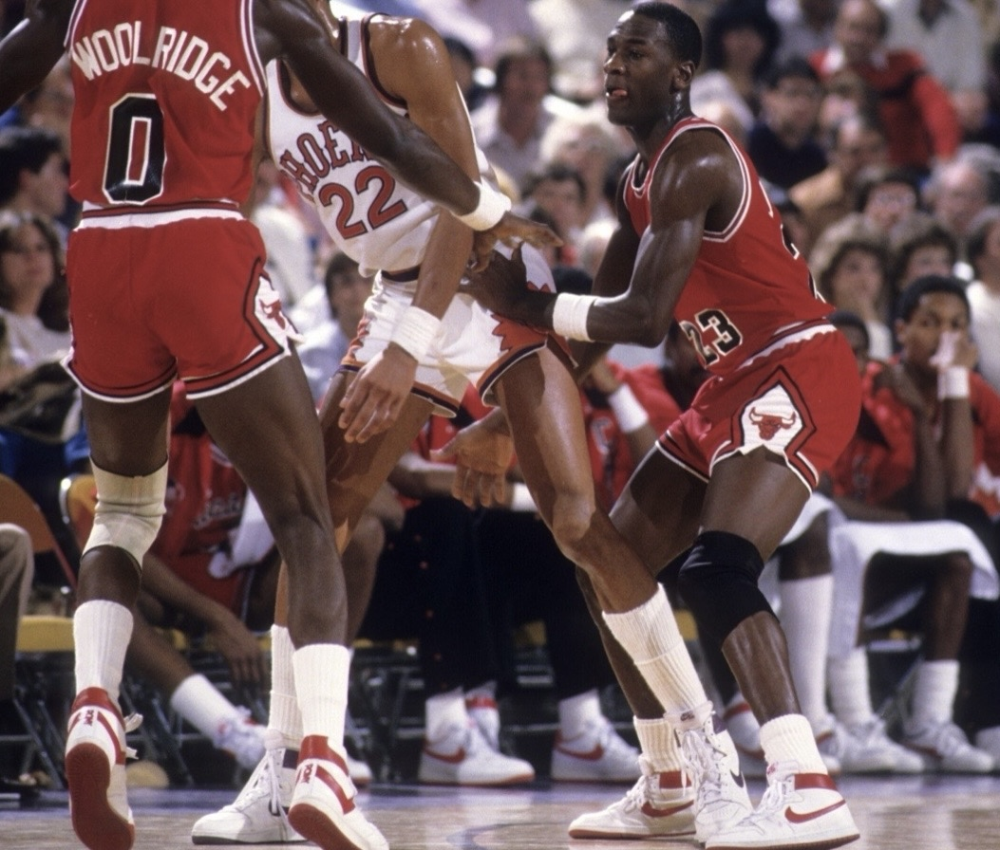
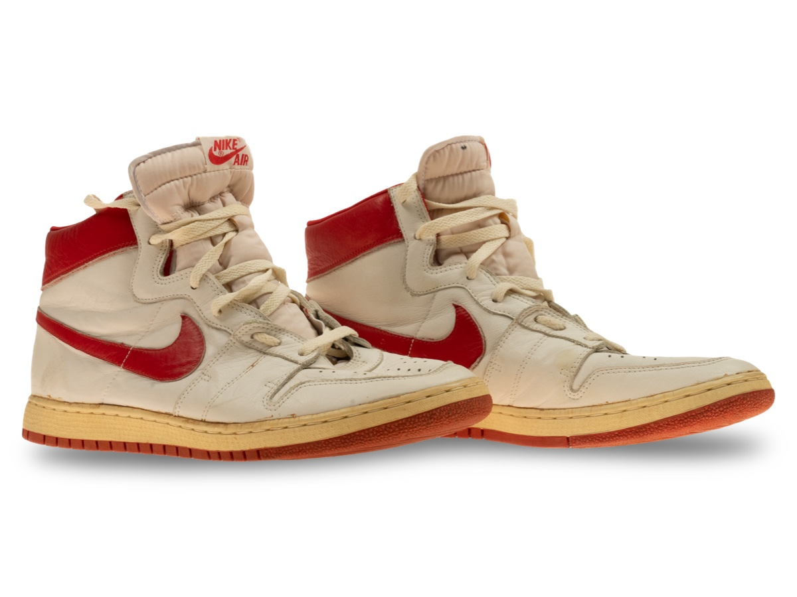
A fourth example, sold in 2024 through REA, carries provenance from a Detroit Pistons ball boy and was previously offered without a public photo-match. Archival research now confirms the pair across multiple appearances within the final phase of Jordan’s Nike Air Ship use, helping define the closing portion of the model’s documented run before the transition to the Air Jordan 1 in late December.
What remains
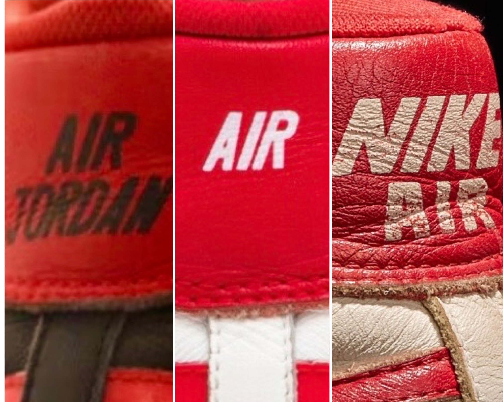
Between preseason and early regular season play, Michael Jordan’s Nike Air Ship usage spans a defined but brief window. Across seven preseason games and twenty-seven regular season appearances prior to the transition on December 20, the model served as the foundation of his earliest professional footwear.
Within that period, only a small number of examples have surfaced publicly. Across five known pairs, archival research can confirm approximately fifteen to twenty games of use through a combination of photographic comparison and documented provenance. These examples do not represent the entirety of that window, but they define much of it.
Rather than suggesting a wide rotation, the surviving evidence points to a limited sequence of distinct pairs, each carrying continuity across specific stretches of play. Changes in branding, construction, and configuration mark a progression already underway before the Air Jordan 1 entered NBA competition.
The Air Ship period was short, but it was not incidental. It represents a transitional phase where individual pairs can still be traced, studied, and understood — forming the earliest documented foundation of Michael Jordan’s Nike history.
While the publicly surfaced examples define much of the timeline, archival research also suggests the presence of at least one additional pair that has not yet surfaced publicly. This example appears within the late portion of the rotation, further indicating that the documented record, while substantial, is not complete.
The Air Ship period was short...
The record is limited, but what remains is traceable.